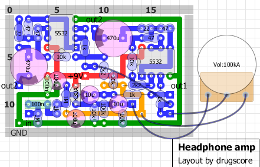

ヘッドフォンアンプその3
2012年12月04日 カテゴリー：ヘッドフォンアンプ・その他アンプ
しつこいですが、またもヘッドフォンアンプです。以前作ったヘッドフォンアンプその2からさらに変更しています。まず、片チャンネルに1つずつデュアルオペアンプを使用しました。歪みにくくなった気がしますが、あまり電池がもたないかもしれません。また、ヘッドフォンアウトとは別にラインアウトを設けました。
回路図、レイアウトは下図です。

なんとなく低音を強化する意味で470uの電解コンデンサを使いましたが、220uでもよいと思います。今回はアルミケースに入れたり、スイッチ付きボリュームを使ったりして気合の入った作りですが、少々重かったです…